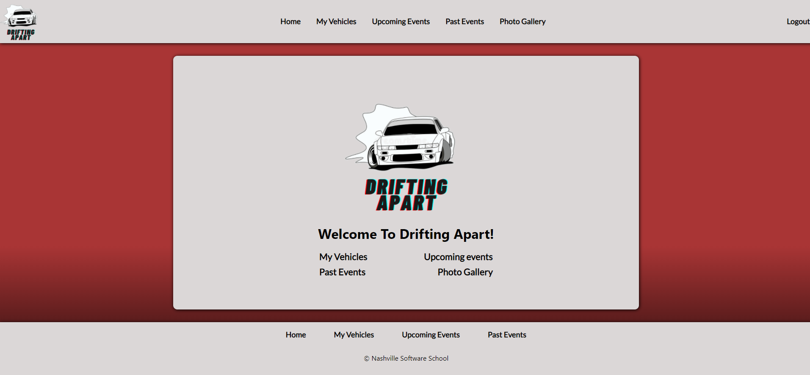
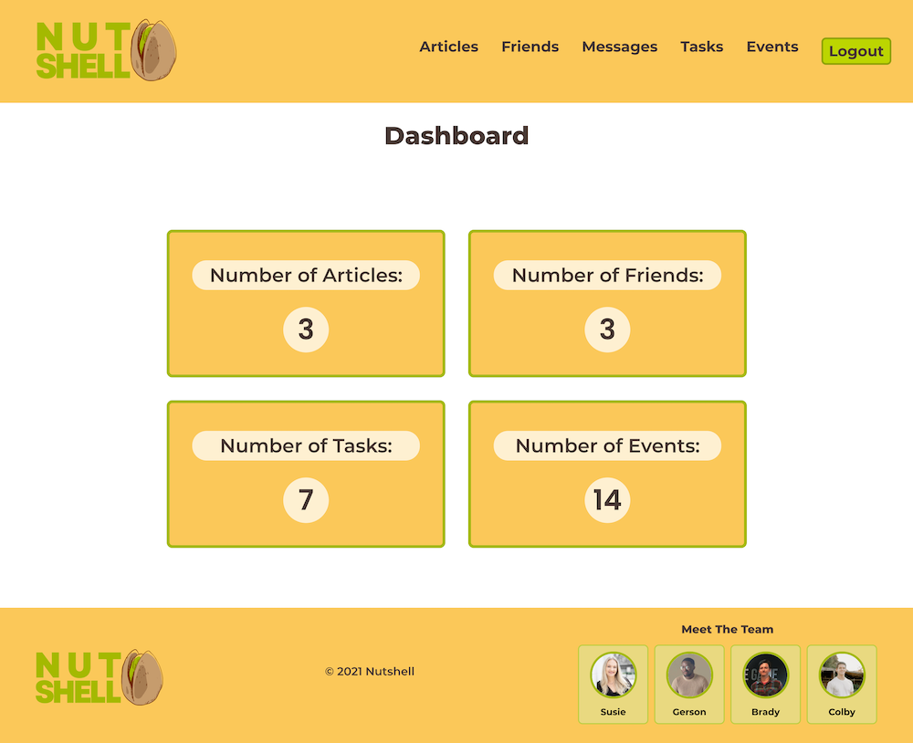
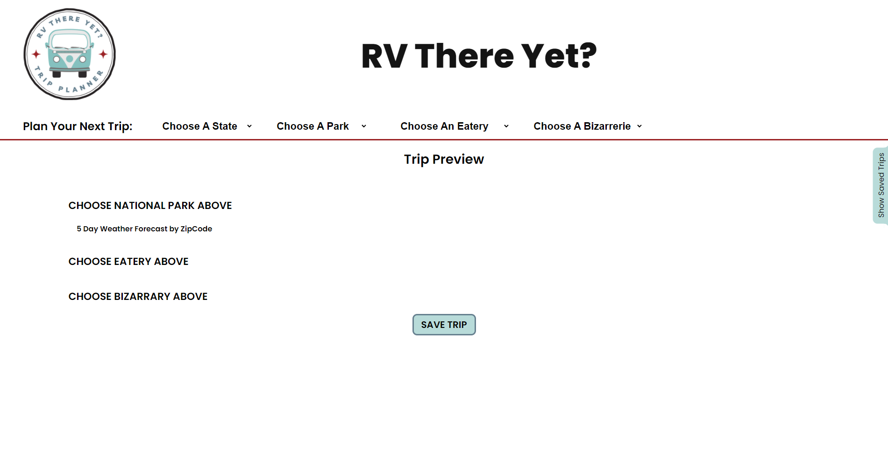

Individual Projects
Drifting
Apart
Drifting Apart is geared towards drifting enthusiasts that want to keep track of their drift
events and
tasks. The app allows for the user to add their vehicles and keep track of assignments related
to said vehicles. The main purpose of the app is to allow the user to add a drift event they
plan on attending and be able to their tasks until the date.
Check out the
code!

Group Projects
Nutshell
Nutshell is a React App built for users to have the capability to post and view news articles,
local events, and post public/private messages with their added friends. It focuses on a sleek,
simple, and interactive design that makes it easy for the user to digest the content of the
webpage. We achieved this by selecting a vibrant-like color scheme and structuring the layout of
the page in a spacious, yet efficient way. We focused on creating an elegant design while also
having strong user functionality.
Check out the code!

RV There Yet?
RV There Yet? is a trip planning website designed for the would be traveler to find and explore
destinations along their way. Searching a trip will allow you to explore National Parks,
oddities and eateries along your way as well as give you access to the information to plan the
perfect trip.
Check out the code!
